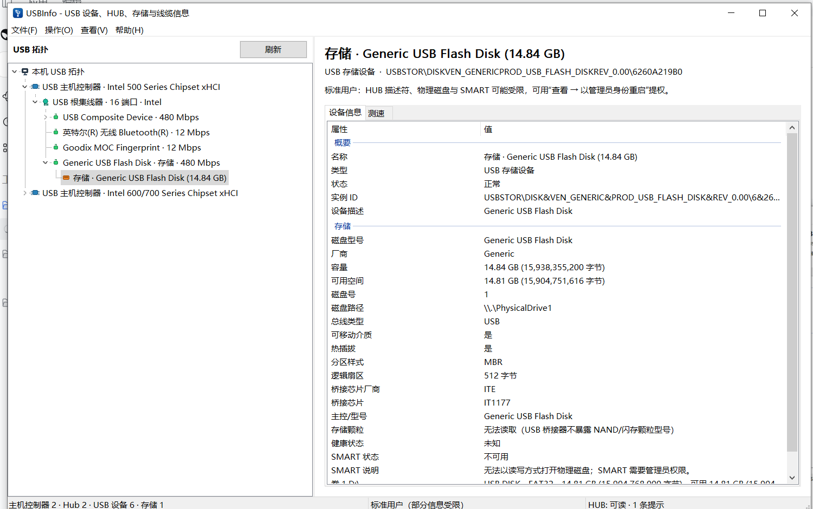

1 USBinfo

USBinfo 将主机控制器、集线器、端口、接口与存储设备展开为一棵树，并读出 Windows 暴露的描述符、SMART 状态与文件级吞吐。程序以 C++20 与 WTL 编写，静态链接 CRT，以单个可执行文件分发；标准用户即可查看拓扑，管理员模式解锁更深的 IOCTL 与 SMART。无遥测，也不访问网络，源码公开。
预印本 · Preprint
Native Windows Utilities
以下为 Windows 10 / 11 平台的原生小工具：USBinfo 用于检视 USB 拓扑、描述符与存储状态，Win32 Disk Imager 用于读写和校验磁盘镜像，Explorer Extensions 为资源管理器补上两个整理文件夹的右键命令。这些工具直接调用 Win32 API，以单个可执行文件或 DLL 交付，不依赖 Electron、Qt 或额外运行时；体积小、启动快，源码公开，便于审查、构建与修改。
关键词Win32；原生；小；源码公开

USBinfo 将主机控制器、集线器、端口、接口与存储设备展开为一棵树，并读出 Windows 暴露的描述符、SMART 状态与文件级吞吐。程序以 C++20 与 WTL 编写，静态链接 CRT，以单个可执行文件分发；标准用户即可查看拓扑，管理员模式解锁更深的 IOCTL 与 SMART。无遥测，也不访问网络，源码公开。

Win32 Disk Imager 是 Win32DiskImager 1.0.0 的原生重写：读取、写入并校验 SD 卡与 U 盘，支持 MD5 / SHA-1 / SHA-256 与“只读已分配分区”。整个界面只有一个 DIALOGEX 资源，控件全部是原生 Win32 控件；可执行文件约 378 KB，不需要 Qt 或任何运行时。遵循 GPL-2.0，源码公开。

Explorer Extensions 为资源管理器补上两个右键命令：「新建文件夹 +」把所选内容按公共前缀归入新文件夹，「摊开文件夹 +」把文件夹树原地摊平，两者都能用 Ctrl+Z 撤销。它是一个原生的 Win32 Shell 扩展，静态运行库，不依赖 .NET、MFC 或 VC++ 运行库，也不需要管理员权限。整个项目只有一个 DLL 和一个小管理器，无遥测、不访问网络；个人非商业使用免费，源码公开。